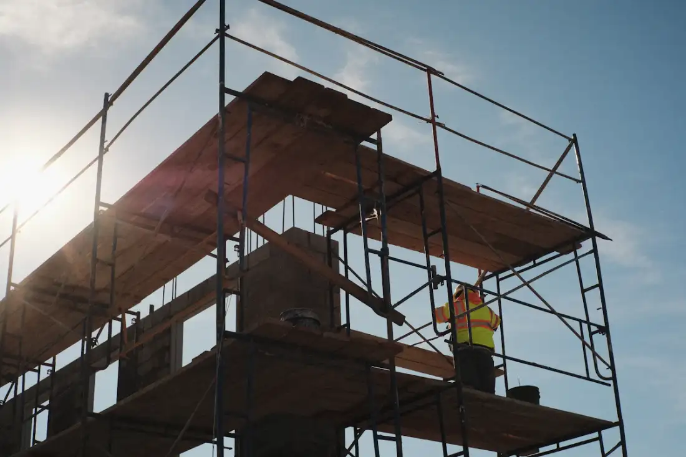
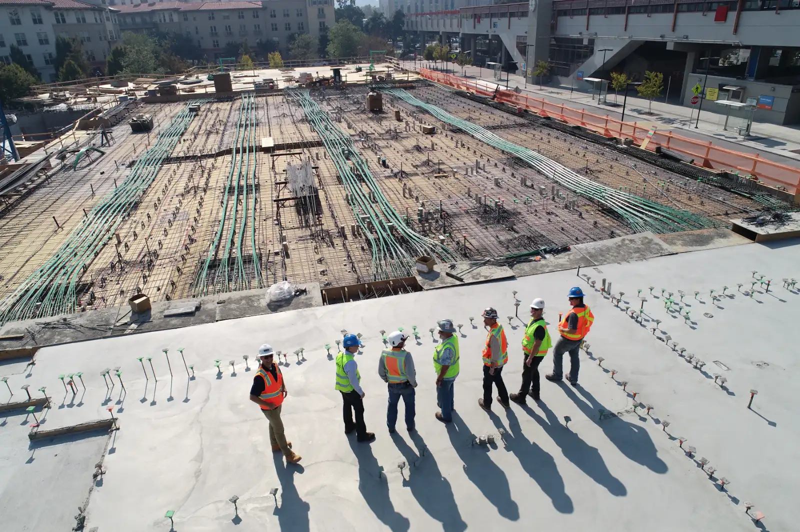
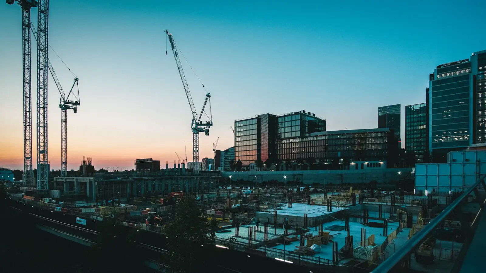

建築・土木・改修
確かな仕事を、次の風景へ。

基礎から仕上げまで、ひとつひとつの工程を確かめながら進める。株式会社 蒼杜建設は、建物と地域の暮らしを支える工事を手がける建設会社です。
事業内容を見る※写真はイメージです
会社紹介
つくる前に、
よく聞く。
建物の新築から、道路や造成などの土木工事、既存建物の改修まで。地域の「建てる」「整える」「直す」に幅広く向き合います。
工事の目的や予算、工期、ご近所への配慮など、お客様が気にかけていることを最初にうかがい、無理のない計画を一緒に考えます。着工後も工程や変更点をこまめにお伝えし、完成までわかりやすく進めることを大切にしています。
私たちの姿勢
現場で守る、
三つのこと。
工事の規模にかかわらず、すべての現場で同じ考え方を大切にしています。
-
安全への配慮
作業前の確認と整理整頓を習慣にし、働く人と現場周辺の方々の安全を第一に考えます。
-
丁寧な施工
見えなくなる部分ほど手を抜かず、ひとつひとつの工程を確かめながら仕上げます。
-
お客様との信頼関係
わかりやすい説明とこまめな報告を心がけ、工事が終わった後も相談しやすい関係を築きます。
※企業理念の記載例です。実際の内容に合わせて変更してください。
施工イメージ
基礎の一枚から、
完成の日まで。
建設現場の雰囲気を伝えるイメージ写真です。当社の施工実績ではありません。実際の施工写真に差し替えてご利用いただけます。

※写真はイメージです。当社の施工実績ではありません。